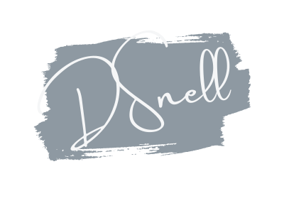
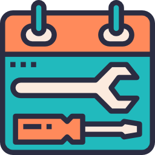

Beautiful Code & Design
FAST, RESPONSIVE & BESPOKE WEB DESIGN SERVICE
We are D Snell Web Design Ltd, a friendly web design company based in NRW. Over the years we are bringing beautiful, bespoke websites with easy to use functions to help you easily update and manage your new website. We believe that behind every good looking website needs to be the functions that make it reliable and easy to use both for the customer and the client, ensuring our sites never skip a beat meaning your company is online 24/7, all designed with SEO in mind.
To see how we can help your company by designing a brand new, update website, SCROLL down to find out more of our web design portfolio & view our work.
Our Services are also listed below, why not have a look and contact us to see what we can do for you…
Our Services!

Every company needs to be online. Having a website is now a huge part of your companies success in fact over 80% of the UK’s population is now online and 77% of them used the internet to make a purchase. The days of the yellow pages and newspaper adverts are slowly fading out and more and more people head over to the internet to find what they are looking for instantly.
In today’s world if you don’t have a website you’ll be left behind, We at DSD understand this and our web design service is designed to get you online and ready to start selling in no time.
But don’t worry we will look after you. We take care of everything from design to sending your new website live, we will be right by you every step of the way. We also provide the tools so you can make your website a success with our easy to update and manage websites you can make your first steps to being online a pleasant one.
We pack our websites with great features, great tech and best of all the latest design trends.
Why is mobile website design so important? Graph icon of Mobile usersSince 2018, 52% of global online traffic came from mobile devices and has overtaken desktop internet users. In fact, it’s been ahead since 2015 (35.1%). This means that more and more people are picking up their mobile phones and quickly searching to get the answers they need. Now imagine you came across a website that was only built for desktop users, all that pinching and zooming to navigate a site just to find the right information you need? Annoying right? So, as any web user does, you jump from the page that is a pain to navigate and click on the next one with the same search credentials. For your company you want to keep the user on your site and make it as easy as possible to find what they are looking for.
Way back in 2015 Google announced an update that would change the way websites rank forever. This was the algorithm change that favoured mobile friendly websites .We have seen a drop in certain sites rankings because owners have neglected to put this change in to effect and Google have penalised them. On the other hand, Google rewarded mobile friendly websites with a boost in rankings. A few years later and mobile design is more important than ever due to the rise in mobile / tablet sales and more and more people opting to grab their tablets rather than their laptops.

Keep your site updated with our website maintenance service We believe every website should be kept in tip-top condition and have the ability to grow when you need it most!
We’ll do things like update all plugins and software to make sure your site is always operating at it’s best along. You’ll also get a few hours of our time to use for web related tasks such as adding a new feature or page, updating content, setting up new emails and more importantly support when you need us the most.